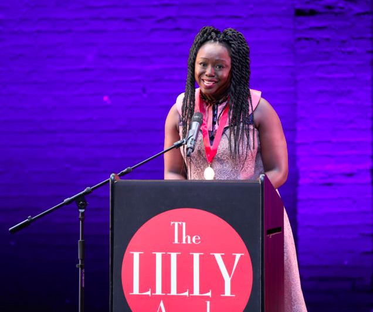
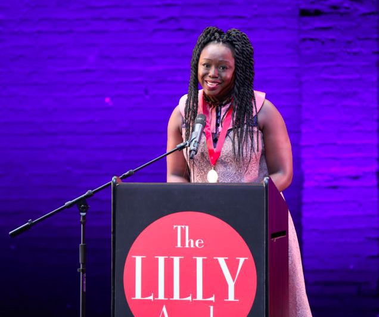

The Lilly Awards Foundation is a nonprofit organization whose mission is to celebrate the work of women in the theater and promote gender parity at all levels of theatrical production.

 

Who Was Lillian Hellman?
"You need to write like the devil and act like one when necessary"
~Lillian Hellman
Lillian “Lilly” Florence Hellman (June 20, 1905 – June 30, 1984) was an American dramatist and screenwriter known for her success as a playwright on Broadway, as well as her left-wing sympathies and political activism. Born in New Orleans, Louisiana, into a Jewish family, she was famously blacklisted by the House Committee on Un-American Activities (HUAC) at the height of the anti-communist campaigns of 1947–52. Although she continued to work on Broadway in the 1950s, her blacklisting by the American film industry caused a precipitous decline in her income during which time she had to work outside her chosen profession. Hellman was praised by many for refusing to answer questions by HUAC. Lillian Hellman’s papers are held by the Harry Ransom Center at the University of Texas at Austin. Her archive includes an extensive collection of manuscript drafts, contracts, correspondence, scrapbooks, speeches, teaching notes, awards, legal documents, appointment books, and honorary degrees. 32 of Lillian Hellman’s 50 years as a writer were devoted primarily to writing for the theatre.
Our Annual Awards Ceremony
“The Lilly’s are so far and away the best awardshow content, stories, everything."
~ Gloria Steinem
Since 2010, we have been proud to honor the myriad of women’s achievements in American theater
with our annual awards ceremony. Each year as the anticipation grows getting closer to the spirited
event, we are reminded just how important these efforts are. Now with the addition of The Count,
we continue to make measurable progress towards gender parity on all levels of theater production.
Why the Lilly Awards are Important
The Lilly Awards remain such an important part of the theatre world today because with everything going on in Hollywood and the #metoo movement it has become increasingly importamt for women in the entertainment industry to feel appreciated and come together as one. In order to show men that women belong in this industry just as much as they do, they need to band together and support eachother and demand the respect they deserve. I believe the Lilly Awards bring us that.